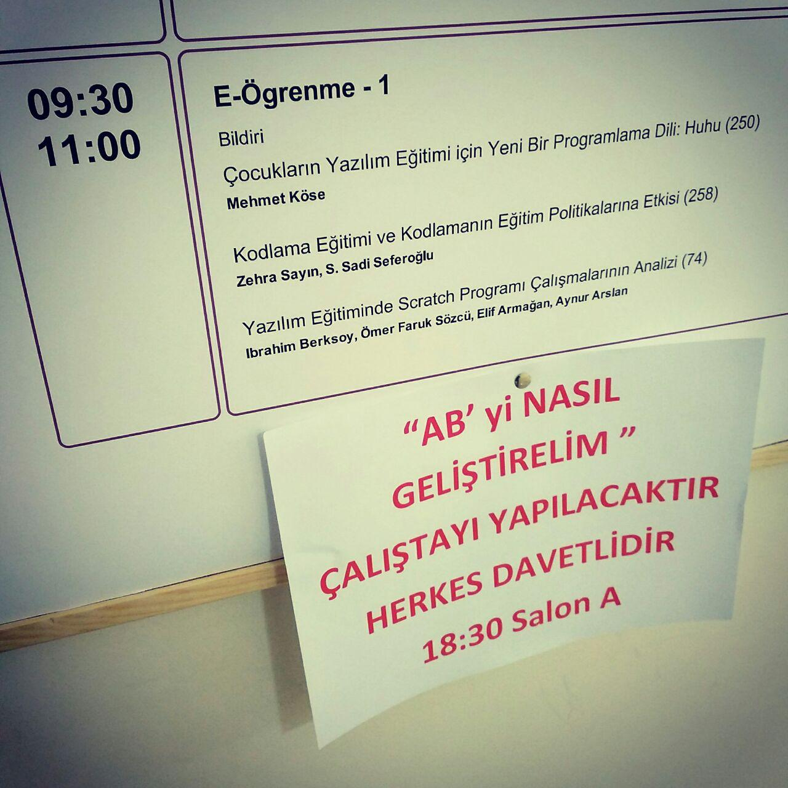

Bu sene Akademik Bilişim 2016'ya bir bildiri ile katıldım. Konferans öncesi kurslar tabi ki yine hevesli gençlerin odağındaydı.
Fakat ben sadece bildiri sunacağım gün olan 4 Şubat'da Aydın'da bulunabildim. Gecesinden geldiğim şehirde o gün akşama kadar tüm günü bildirilerle geçirdikten sonra şehirden ayrıldım.
Benim sunumum, çocuklara programlama öğretirken kullanılabilecek basit bir script dili yazma amacıyla başladığım huhu ile alakalıydı. Şu an için pek ayakları yere basan bir proje olduğu söylenemez. Temel fikri, çalışır halini, amaçlarını, pedagojik amaçlarını çoğunluğunun üniversite hocası olduğu büyükçe bir topluluğa sunduktan ve kod yazarak katkı sağlayabilecek kişilerden katkı beklediğimi belirttikten sonra verilen süre içerisinde bildiriyi sonlandırdım. 13' yılında yine Akademik Bilişim'de yaptığım acemice konuşmaya nazaran gayet güzel oturum olduğunu söyleyebilirim sanırım.
Öncelikle eleştiriye inanan birisiyim, herkesi, her şeyi, daha fazla ve sürekli eleştirmek gerektiğine inanırım çünkü bizim kültürümüzde pek olmayan birşey bu. Fakat 18 yıldır özveriyle yapılan bir organizasyonu da cümleleri tartmadan eleştirmekten hicap duyarım.
4 Şubat günü akşamı, dersliklerin bulunduğu binanın konferans salonunda "AB'yi nasıl geliştirelim?" çalıştayı yapıldı. Organizasyon içindeki hocalar da dahil bayağı hararetli geçen toplantı sonucunda herkes önerilerini yaptı, sorunları masaya yatırdı, konular üzerine tartışıldı. Tepki olarak kalkıp salonu terkeden hocalar da oldu. Eleştiriye inanıyorum, o gün hararetli geçse de sonucun bir sonraki Akademik Bilişim'i daha iyi hale getireceğini düşünüyorum.
Ayrıca çalıştayda ben de birkaç söz alıp birkaç öneride bulundum. Bir tanesi var olan internet sitesinin yeniden yazılması, herkesin katkı sağlayabileceği bir yapıya geçirilmesi ile alakalıydı. Tabi cümleleri toparlamaya çalışırken kullandığım kelime hep açık kaynak idi. Şimdi hepimiz etkinliğin düzenlenmesinde rolü olan hocaların benimsediği özgür yazılım felsefesinin farkındayız. Ama birşeyler söylemeye çalışan birinin her "açık kaynak" lafının ardına "özgür yazılım!", "özgür yazılım olacak" cümleleri iliştirmek yakışmadı. Özgürlükten bahsediliyorsa öncelikle insanların ifadelerine müdehale edilmemeli diye düşünüyorum. Yıllardır bu ülkede özgür yazılım savunuyor olmak, sizi özgür yazılımın muhtarı yapmaz.
İnternetten takip ettiğim, çalışmalarını ilgiyle izlediğim hocaların ve öğrencilerinin hakkındaki düşüncelerim 5-6 dakika içinde daha farklı bir formata geçti.
Özellikle öğretim üyelerinin, hoca dediğimiz kişilerin heyecansız ve ruhsuz araştırma sonuçlarını dinlemek benim gibi gençlerin pek hoşuna gitmiyor tabiki. Ama bunun için yapılabilecek fazla bir şey yok sanırım. Bildirilerin kalitesi biraz daha artarsa çok daha keyifli etkinlikler geçireceğiz diye düşünüyorum. Bu da etkinliği sahiplenmek ve yaymak ile alakalı.
Bunun dışında dediğim gibi, 18 yıldır düzenlenen ve her sene büyüyen bu etkinliği koordine ettiği için Akgül hocaya ne kadar teşekkür etsek az.
